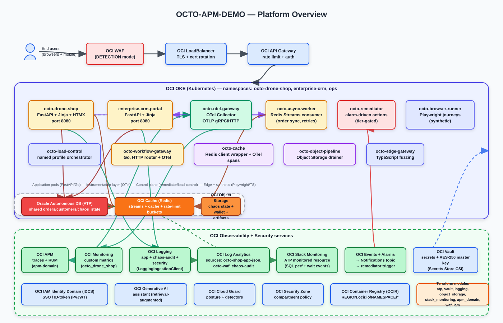

OCTO APM Demo Platform¶
An end-to-end OCI Observability reference: distributed tracing, real-user monitoring, log analytics, custom metrics, and database telemetry — wired together so every browser click can be followed all the way to an Oracle Autonomous Database query.
Get Started View Architecture Source on GitHub
Choose your path¶
-
I want to see the demo
Walk through the storyboard: a customer checkout, a failure injection, and the full trace + log + metric pivot inside the OCI console.
-
I want to deploy it
Compute single-VM, OKE with Helm, or local Docker Compose — pick the footprint that matches your tenancy and time budget.
-
I want to understand the observability story
Metrics, Events, Logs, Traces, plus Security (MELT-S) — how every signal is captured, correlated, and routed through OCI Observability.
-
I want to extend the codebase
Service inventory, data model, correlation contract, and the layered architecture diagrams that explain how the pieces fit together.
What's in the platform¶
A small constellation of services, each instrumented end-to-end and connected through one shared trace context:
- Drone Shop storefront — FastAPI (Python) customer storefront with browse, cart, checkout, AI assistant, and RUM-instrumented browser sessions.
- Java payment sidecar — Spring Boot service that adds OCI APM App Servers visibility and gateway authorization spans to every checkout trace.
- Enterprise CRM Portal — FastAPI (Python) operations portal for catalog, order, customer, simulation, and security-training workflows.
- Workflow Gateway — Admin labs proxy fronting Select AI and operator-only workflow surfaces.
- Support services —
async-worker,load-control,object-pipeline,remediator,edge-fuzz, andauto-remediatorfor chaos, signal injection, and remediation demos. - Shared Oracle Autonomous Database (ATP) — single instance with session tagging, SQL_ID bridging, and an idempotency contract for cross-service correlation.
- End-to-end trace context — browser RUM → FastAPI → Java sidecar → ATP,
with W3C
traceparentpropagation at every hop. - Full OCI Observability surface — APM, APM RUM, Logging, Logging Analytics, Monitoring, Stack Monitoring, and Service Connector Hub.
OCI Observability at a glance¶
| Signal | OCI Service | What you see |
|---|---|---|
| Distributed traces | APM | Span search, trace explorer, dependency map, App Servers view |
| Browser sessions | APM RUM | Page loads, custom actions, fetch trace propagation |
| Structured logs | Logging → Logging Analytics | Searchable correlated logs with oracleApmTraceId |
| Custom metrics | Monitoring | Payment success rate, login failures, business KPIs |
| Database health | Stack Monitoring | ATP performance, capacity, and SQL pivots |
| Log routing | Service Connector Hub | OCI Logging → Log Analytics pipeline |
| Security events | Cloud Guard + Log Analytics | Detection rules, attack-lab pivots, WAF evidence |
The correlation promise
Every browser click, FastAPI request, Java method, ATP query, log row, and APM span shares the same trace context. Any view in any OCI Observability surface can drill into any other view in one click.
What's new¶
Recent platform additions worth a look:
-
Token-safe payment telemetry
Multi-gateway component labels and verification spans without raw PAN, CVV, wallet, or cryptogram material.
-
Java sidecar trace propagation
W3C
traceparentand custom-header propagation across the Spring Boot payment sidecar and the Python checkout path. -
Login observability
Success/failure spans, audit rows, and metric pivots tied to the same user session and trace context.
-
Log Analytics dry-run pipeline
Offline-safe rendering for saved searches and detection rules so you can review queries before they hit a tenancy.
-
Helm chart parity
Helm chart now matches the raw OKE manifests one-for-one, including secrets, network policies, and Service Connector Hub wiring.
-
OCTO admin-scope guardrails
Coordinator endpoints are guarded by an admin-only scope check to keep operator surfaces off the public storefront.
-
Layered architecture diagrams
Public SVG previews plus committed DrawIO sources for the platform, compute reference, and observability flow.
-
Code Knowledge Map
Generated map of services, modules, and integration points to accelerate codebase exploration.
Workshop tour¶
Ten hands-on labs walk through the observability story end-to-end:
| Lab | Topic |
|---|---|
| Lab 01 | Capture your first APM trace from a checkout request |
| Lab 02 | Pivot from an APM trace to the correlated log line |
| Lab 03 | Drill from a slow span down to the offending SQL_ID on ATP |
| Lab 04 | Detect an outage from RUM session metrics |
| Lab 05 | Wire a custom metric to an OCI Monitoring alarm |
| Lab 06 | Investigate a WAF event with Log Analytics |
| Lab 07 | Build a saved search and a Log Analytics dashboard |
| Lab 08 | Monitor Autonomous Database with Stack Monitoring |
| Lab 09 | Run a chaos drill and watch every signal react |
| Lab 10 | Diagnose a failed checkout across all five signals |
Reference architecture¶

Layered platform view with the customer journey, service topology, shared ATP, and the OCI Observability surfaces that each service emits to. DrawIO sources are committed alongside every SVG.
flowchart TD
Customer(["Customer browser<br/>RUM"])
Operator(["Operator browser<br/>SSO"])
Edge["OCI Load Balancer / WAF / API Gateway"]
Shop["Drone Shop<br/>customer storefront"]
CRM["Enterprise CRM<br/>operations portal"]
Java["Java payment sidecar<br/>App Servers"]
WGW["Workflow Gateway<br/>Select AI"]
ATP[(Oracle ATP<br/>shared)]
GenAI["OCI GenAI<br/>assistant"]
Obs["OCI Observability<br/>APM + Logging + Log Analytics + Monitoring"]
Customer -->|HTTPS| Edge --> Shop
Operator -->|HTTPS| Edge --> CRM
Shop <-->|traceparent| CRM
Shop --> Java
Shop --> WGW
Shop --> ATP
CRM --> ATP
Java --> ATP
Shop --> GenAI
Customer -.-> Obs
Shop -.-> Obs
CRM -.-> Obs
Java -.-> Obs
WGW -.-> ObsTenancy portability¶
Set one variable and everything derives:
export DNS_DOMAIN="${DNS_DOMAIN}"
# shop.${DNS_DOMAIN} or your chosen SHOP_PUBLIC_URL
# crm.${DNS_DOMAIN} or your chosen CRM_PUBLIC_URL
# IDCS redirect URIs, CORS origins, and browser links derive from variables
No tenancy OCIDs, live public IPs, private IPs, regions, or resolved hostnames
belong in public docs or diagrams. Use variables in scripts and placeholders
(${DNS_DOMAIN}, <COMPARTMENT_OCID>, <github-username>) in published
material.
Status & support¶
- Open-source project, MIT license
- Issues and discussions on GitHub
- Companion repositories: Drone Shop · CRM Portal
- Often deployed alongside an ops portal and OCI Coordinator, but this repository remains standalone and tenancy-portable.